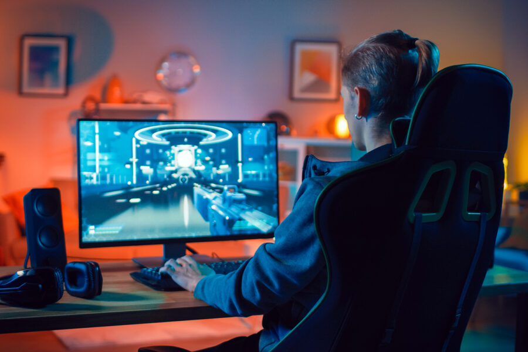

Autor:González López José David

CARACTERÍSTICAS
Una de las principales características del mouse gamer es la precisión. Estos dispositivos pueden ofrecer una precisión de hasta 16.000 DPI o PPP (Dots Per Inch o Píxeles Por Pulgada).
Lo que permite a los jugadores realizar los movimientos más pequeños y precisos con la máxima exactitud. Esta característica es especialmente útil para los jugadores de juegos de disparos en primera persona, ya que les permite apuntar con mayor precisión y rapidez.